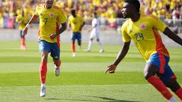
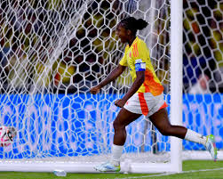
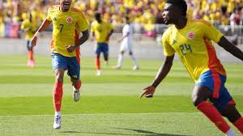
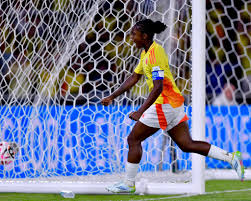

RESUMEN DEl FUTBOL
El fútbol es uno de los deportes disputados en los Juegos Olímpicos de Verano; el torneo se rige bajo las normas de la FIFA, que lo denomina oficialmente Torneo Olímpico de Fútbol, y lo organiza en conjunto con el COI. Es el torneo de selecciones no absolutas más antiguo del mundo.
Estados Unidos es el comité olímpico más exitoso con 5 medallas de oro (todas en la rama femenina) y Brasil el que más medallas ha conseguido en la historia del torneo con un total de 10 medallas en ambas ramas (2 de oro, 6 de plata y 2 de bronce).
La categoría masculina se ha disputado desde París 1900, a excepción de la edición de Los Ángeles 1932, y el torneo de fútbol femenino se disputa desde Atlanta 1996. De la misma forma que el resto de los torneos de la FIFA, cuenta con una competencia preliminar de clasificación que distribuye las plazas disponibles entre las distintas confederaciones regionales.
HISTORIA DEl FUTBOL
El fútbol ha estado presente desde el año 1900, en París en todas las ediciones de los Juegos Olímpicos, excepto en Los Ángeles 1932. Algo que demuestra su longeva popularidad. Sin embargo, no siempre ha tenido el formato actual, ya que empezó siendo un torneo en el que clubes de fútbol, todos extintos a día de hoy, representaban a la delegación del país del que procedían.
REGLAS DEl FUTBOL
1- Los jugadores deben tener entre 16 y 23 años
2-cada equipo puede inscribir 18 jugadores
3-lospartidos deven duras cada tiempo 45 minutos
4-cada equipo puede realizar 3 cambios por partido
5-los equipos se dividen en grupos y juegan entre si los mejores equipos
PROGRAMACION OLIMPICOS 2024
sáb, 10 de ago·Competición por la medalla de oro
Finalizó (femenino)
vie, 9 de ago·Competición por la medalla de bronce
Finalizó
(masculino)
vie, 9 de ago·Competición por la medalla de oro
Finalizó
jue, 8 de ago·Competición por la medalla de bronce
Finalizó
CUADRO DE HONOR "MEDALLERO"
- Oro:PRIMER PUESTO LO GANO ESPAÑA(MASCULINO)(FEMENINO)PRIMER PUESTO LO GANO ESTADOS UNIDOS
- Plata:SEGUNDO PUESTO LO GANO FRANCIA(MASCULINO)(FEMENINO)SEGUNDO PUESTO LO GANO BRAZIL
- Bronce:TERCER PUESTO LO GANO MARRUECOS(MASCULINO)(FEMENINO)TERCER PUESTO LO GANO ALEMANIA
VIDEO
GALERIA DE IMAGENES
 



CUESTIONARIO DEl FUTBOL
Instrucciones:
Usa las flechas del teclado para mover al jugador:
↑ Arriba, ↓ Abajo, ← Izquierda, → Derecha
Presiona la tecla espacio para atacar.